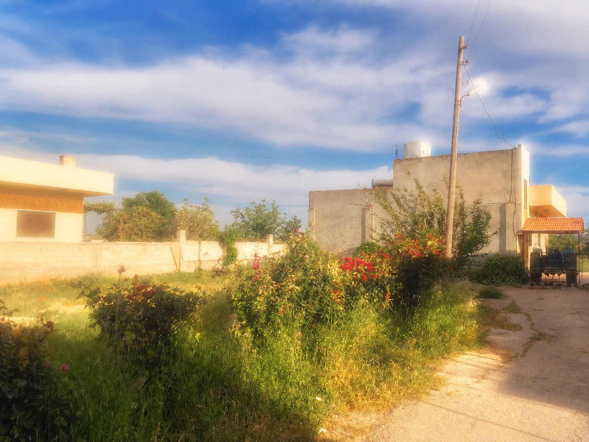

about عنّي


Fadi Azra, born and raised in Syria, is an artist and fourth-year student at Tufts University in Boston, Massachusetts. He is from Al-Bayadiyah and attended Amir Ibrahim High School in Hama before moving to the United States in 2023. He began his college career at the Tufts School of the Museum of Fine Arts and later transferred to Tufts’ Combined Degree Program, where he is pursuing a Bachelor of Fine Arts and a Bachelor of Science in Engineering Psychology (Human Factors Engineering).
Fadi’s artistic practice centres on storytelling through stop-motion animation, painting, and drawing. A lifelong artist, Fadi began making puppets and painting at the age of six and continues to explore creative approaches to expression that bridge his fine arts background with psychological inquiry.